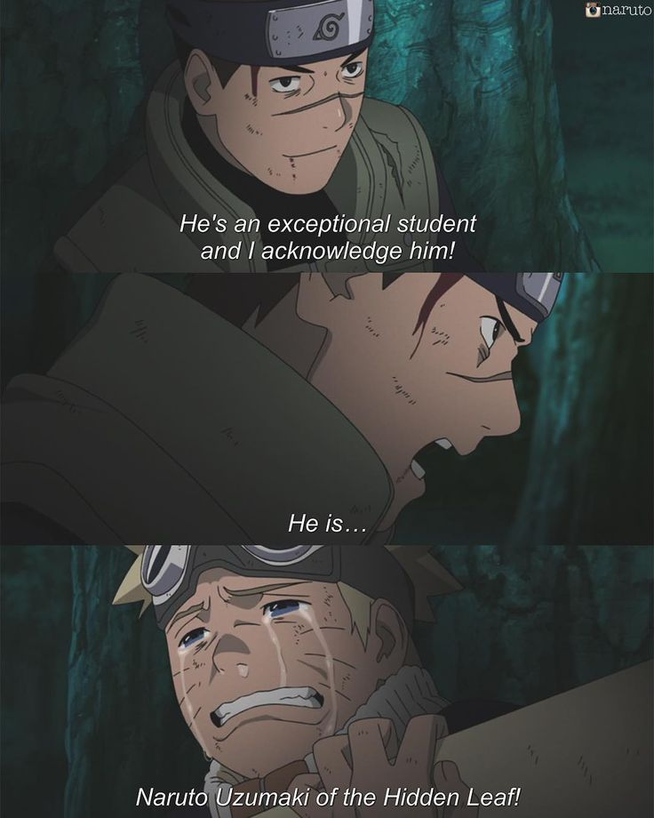
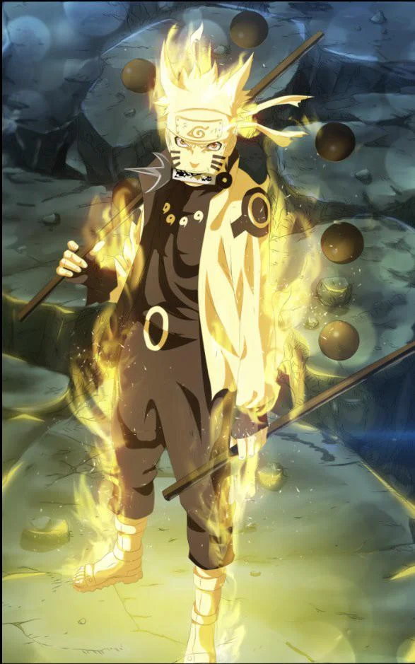

Naruto Uzumaki was alone. He had no friends, no family, no allies, nothing. The demon fox killed thousands of people in the Leaf Village and because that fox was now sealed in side of Naruto, the villagers shunned him and viewed him as a monster. Everyone ignored him and parents told their children to stay away from him. This led Naruto to want to become the Hokage, and be acknowledged by everyone. Nobody believed in him. Nobody even tried to understand who Naruto was, except for one person.
Iruka, his teacher in the Ninja Academy, didn't believe that Naruto was the same as the Nine-Tailed Fox. In the beginning of the story, Naruto is tricked by one of his teachers, Mizuki, into stealing a scroll with forbidden techniques. Prior to this incident, Naruto had no idea why everyone disrespected him. He didn't know that the fox was inside of him, and he didn't know the history behind the village either. Mizuki planned to steal the scroll from Naruto by playing the nice guy, kill him, hide the body, and flee. Naruto was to be his scapegoat, making the villagers believe that Naruto fled with the scroll with an evil plan. However, Mizuki, in a fit of rage at Naruto not giving him the scroll, spilled the entire story to Naruto even though it was supposed to be kept secret from him. Iruka, however, was following Naruto and protecting him. Through the empowerment of Iruka's kind words, Naruto actually used one of the forbidden techniques to defeat Mizuki.
Yeah... the monster fox would do that... but Naruto is different. I've acknowledged him as... one of my excellent students. He may not be the hardest worker... and he is clumsy and no one accepts him... but he already knows what it is to feel pain inside your heart. He isn't the monster fox. He is a member of the Leaf Village. He's Naruto Uzumaki!
-Iruka, yelling at Mizuki for his destructive langugae
As Naruto grew older, his mentor Jiraiya believed he would one day be able to control the chakra of the Nine-Tailed Fox. Through extensive training, he was able to release some of its chakra and somewhat keep it under control, but he was still far from being able to unleash its full potential. Naruto's primary motivations to get stronger were to protect himself/the village from the Akatsuki, and to save his friend, Sasuke Uchiha.
The death of his mentor Jiraiya at the hands of Akatsuki member "Pain" was a turning point for Naruto. His happy-go-lucky attitude was shattered and he finally understood the severity of the Akatuski threat. Naruto set out to Mount Myoboku in pursuit of learning sage mode. To prepare for the fight against Pain, Naruto learned how to absorb chakra from nature and make it his strength. With a single ability, Pain destroyed the entire Leaf Village, leaving nothing but a massive crater. During the fight, Pain killed multiple of Naruto's allies including his teacher Kakashi and a girl who loved him, Hinata. Naruto's anger then took control and the Nine-Tailed fox was released, only to be sealed once again by the lingering chakra of Naruto's late father, Minato Namikaze, who was also the Fourth Hokage who sealed the fox inside of Naruto in the first place. The fight ended in Naruto cornering Pain's main body, forcing him to surrender. Naruto's speech addressed to Pain reuslted in him killing himself to revive Naruto's friends, including Kakashi and Hinata.
A major aspect of Naruto as a character is his compassion for other people. His tough childhood combined with the struggle of trying to save Sasuke helped him sympathize with nearly all of his villains. Much of the series is filled with Naruto struggling to befriend the Nine-Tailed fox. However, during the Fourth Great Ninja War, the fox came to a realization. He thought that he hated all humans, and that all humans hated tailed beasts. Being inside Naruto though, he could feel that Naruto held no hatred in his heart. Naruto was a pure soul, a human who didn't hate the tailed beasts. In fact, Naruto has even said that some day, he would try to get rid of all the hatred inside of the fox himself. Just as Iruka had acknowledged Naruto, he acknowledged that the fox wasn't just a "beast". The name of this fox was Kurama, and being inside Naruto, he was a member of the Leaf Village. This speech united the two and allowed Naruto to combine his chakra with that of the fox, bringing out his ultimate form. 
Soon after the war, Naruto married Hinata Hyuga. They have a son named Boruto and a daughter named Himawari. As hokage of the village, Naruto doesn't spend much time with his family, but he tries the best he can. He has been devoted to protecting the village ever since he was a child, it's no surprise that it is a priority to him. Naruto succeeded everything he dreamed of: he was the Hokage, he saved Sasuke, he was acknowledged by the Village, everyone respected him, and he had a family. His character development is over, opening the door for his successor, Boruto Uzumaki.